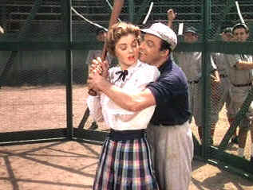

| Take Me Out to the Ball Game/B,A- |
|
Warner/1949/93/FS 1.33 |
Turn on the
turn of the century: ball players uniforms are traditional flannels
ladies bathing suits shelter more of the womanly posterior, and baseball is
the national sport. New Wolves baseball team owner K.C. Higgins arrives for
spring training. The fun loving players are in for a big surprise. K.C. has
more curves than the collective pitching staff. K.C. is a lady. This
baseball team has the best darn double play combo in the league, O'Brien to
Ryan to Goldberg, but the high life and the floozy skirts have put a crimp
into the Wolves diamond magic. It's up to K.C. to tame the boys and get the
Wolves on track.
 |
| Kelly
assumes the position with Williams. ©Warner |
There isn't much to the
story. It's just fun and high jinx in a colorful setting. Frank Sinatra
looks like he could be blown away by a good wind as second baseman Dennis
Ryan. Gene Kelly is acrobatic and effervescent as shortstop, team leader and
lover Eddie O'Brien and Jules Munchin almost looks like a first baseman as
Nat Goldberg. It's a good idea for an MGM musical. The cast is
stellar. There's obviously good chemistry between the guys. Their next
effort at musical magic the following year resulted in the jubilant On the
Town. Esther Williams is athletic and convincing with the bat.
Breezy musical entertainment, but it's no Singin' in
the Rain. Busby Berkeley directs from a story by Gene Kelly and
Stanley Donen. The songs and music could have made Take Me Out to the
Ball Game a World Series contender, but they mostly fail to excite the
imagination. The highlight is the O'Brien to Ryan to Goldberg
number.
Take Me Out to the Ball Game is a happy DVD surprise.
The condition of the elements is excellent. Color registration is pretty
much dead on; no hint of the problems encountered with Anchor's Aweigh.
Technicolor© is delivered with vibrant saturation. Transfer is appropriately
bright. Mono sound is clean and free of hiss. Resolution is excellent with
no unsightly enhancement or compression artifacts. Two deleted musical
numbers added as a bonus include Kelly crooning Baby Doll to Williams and
Sinatra serenading Betty Garrett with Boys and Girls Like You and Me.
Theatrical trailers for Anchors Aweigh, On the Town and
Take Me Out To The Ball Game complete the package.
|
|
|
|

Take a look at the merry images of America's gift to the
movies:
Hollywood Musical Posters are featured from The Movie Poster
Archive.


The Cinema Laser
A home grown magazine for laserphiles that has been publishing for a
number of years and has embraced DVD in a big way. Lots of helpful
information.

Doug Pratt's been doing almost longer than anyone in the business,
reviewing laser discs, that is, and now DVDs too. The venerable Laserdisc
Newsletter has been publishing since 1984. Pratt probably has a large
enough stock of laser discs in his house to build a DVD-proof bomb
shelter. Check out his on-line reviews at
DVDlaser.com.
Imaging Science
Foundation
The Imaging Science Foundation promotes proper standards in home
theater viewing. ISF trained technicians offer monitor calibration
services to consumers. The difference in a properly calibrated
monitor can be astounding. Click on the image to find an ISF member near
you.

A great place for movie lovers and techies to visit for exchange of
ideas. New speedy interface is an inspiration for more dialogue. Home of
Robert( Obi) George's DVD reviews.

A vast reservoir of DVD information, reviews, the kitchen sink. Check out
their huge DVD database including reviews from many sites.

DVD King does the retail thing these days selling DVDs.
DVD etailer.

DVD News, Reviews, Previews, Easter Eggs and more. |